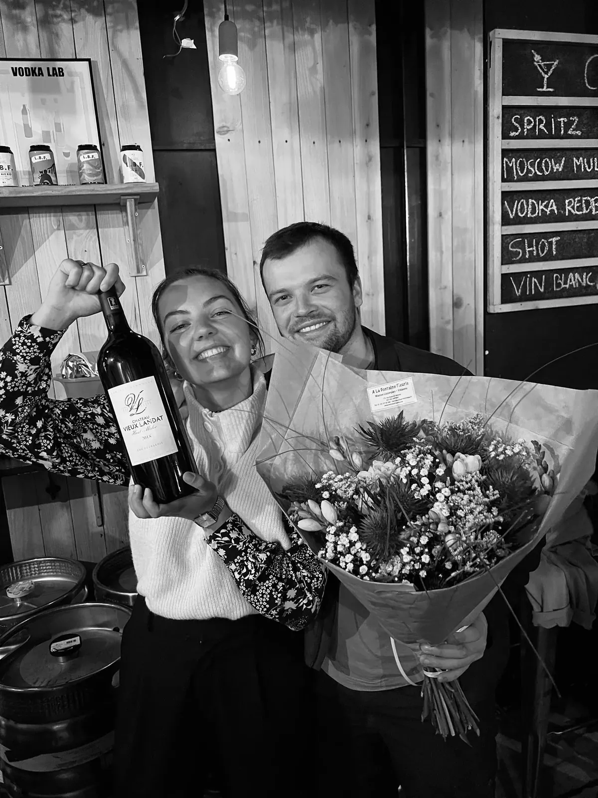
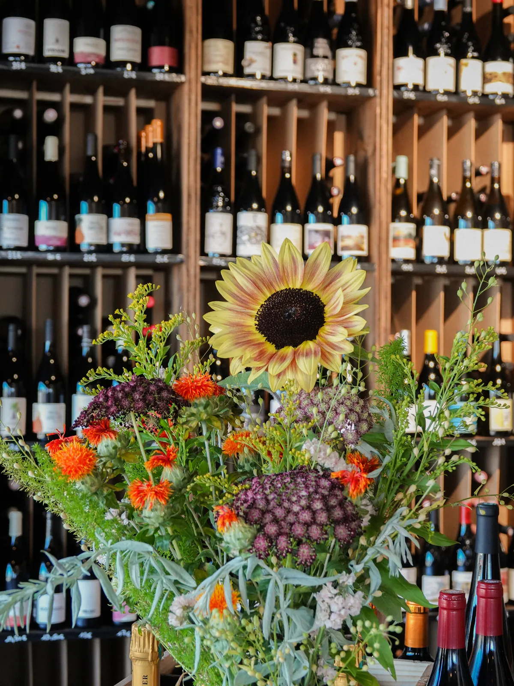
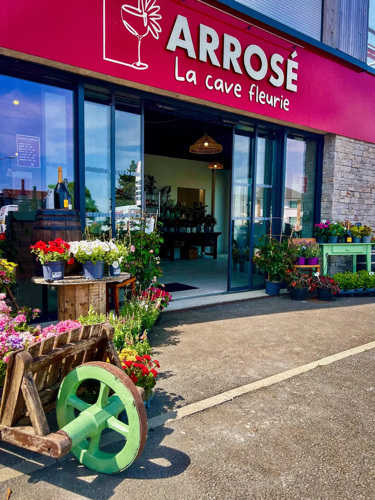
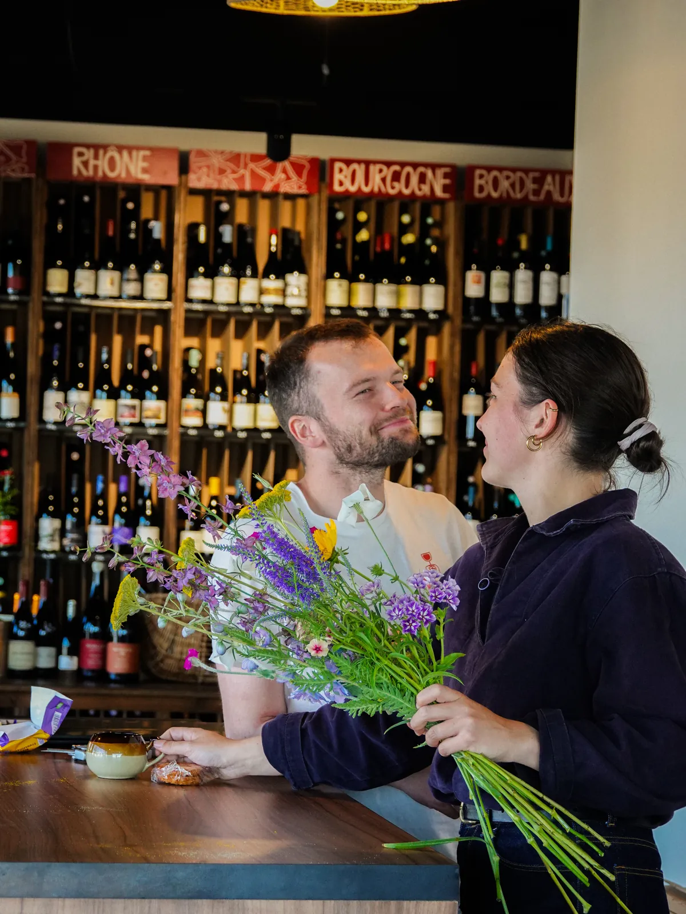

La cave fleurie
Arrosé [a.ʁo.ze] n. p. : lieu où se mêle l'odeur du bois des caisses de vins à celle des fleurs de saisons. Lieu chaleureux où les papilles se régalent autant que les yeux. Lieu qui n'attend que vous.
Nous, c'est Erell et Tanguy, des copains de longue date. Originaires de Trébeurden et de Lannion, nous sommes passés par la capitale au début de notre vie professionnelle, ce qui nous a permis de nous rendre compte de trois évidences :
De ces trois points naît un projet commun : créer un lieu où nos deux univers se rencontrent, se côtoient et fonctionnent ensemble, chez nous, au cœur du Trégor. Vous souhaitez plus de détails ? Nous serons ravis de vous en dire plus à Arrosé, La Cave Fleurie.

Arrosé, c'est notre boutique de vins et de fleurs à Trébeurden, sur la Côte de Granit Rose. On vous y propose une sélection de vins français, de bières bretonnes et de spiritueux, des fleurs de saison, des plantes extérieures et intérieures, et plein d'autres idées cadeaux ou pour se faire plaisir.

Mais ce n'est pas tout ! On répond également à toutes vos demandes sur des événements, que ce soit en prestation florale ou pour la boisson, avec notamment la location de tireuse. Nous proposons aussi d'animer des moments forts avec des ateliers de dégustation de vins, de création florale, ou bien les deux en même temps !
Basés à Trébeurden, sur la Côte de Granit Rose, on est heureux de faire vivre notre coin de Bretagne et d'accueillir celles et ceux qui viennent de tout le Trégor : Lannion, Pleumeur-Bodou, Perros-Guirec, Trégastel, Ploumanac'h, Île-Grande, et au-delà. Et si vous ne pouvez pas venir jusqu'à nous, pas de souci : on propose aussi la livraison, et on se déplace pour vos événements dans tout le Trégor.
Fleuriste, caviste, ou un peu des deux à la fois : chez Arrosé, on vous accueille comme des copains, avec tout notre amour pour les belles (et bonnes) choses : du vin et des fleurs.

